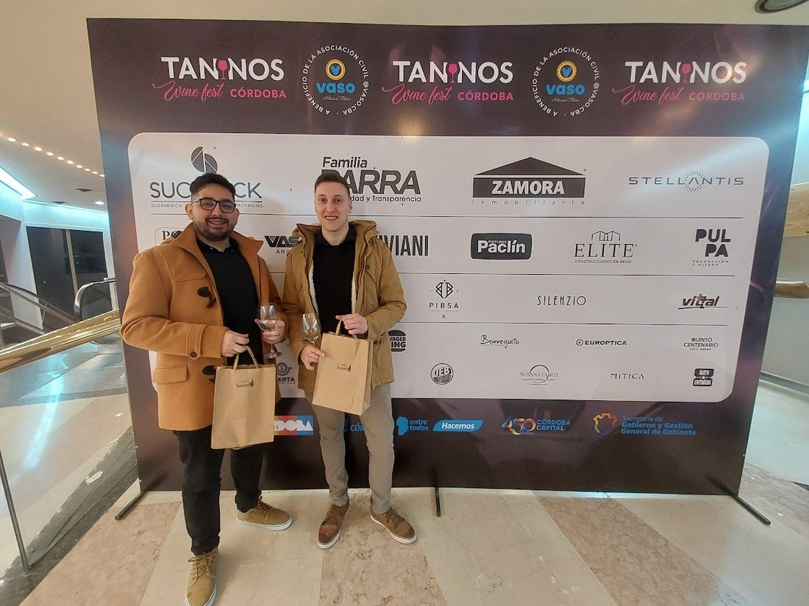

Universidad de Belgrano
Technical Degree in Programming.
Educación
Technical Degree in Programming.
Ingeniería en Sistemas.
Tecnicatura en Programación.
Experiencia
Java, Spring Boot, microservicios, datos, CI/CD y flujos AI-assisted.
SaaS de alta demanda, bugs complejos, features, MySQL, GitHub Actions, Codex y MCP.
CRM Java/Spring Boot, microservicios para SUBE, PostgreSQL, SOAP/REST, GCP y Kubernetes.
Vaadin, Docker, batch Java/C++, Oracle, ATM/ITM, Jira y discovery técnico con bancos.
AngularJS para ISBAN Santander y bootcamp inicial de Java, Maven e integraciones.
Proyectos
Red social hiperlocal: alertas, mascotas, comercios, mapa y filtros por cercanía.
Ver sitioSaaS/POS para ventas, stock, caja y reportes; usado en Kiosco Jardín 2.
Ver sitio
Sommelier virtual de Mendoza; vinos, bodegas, eventos, discovery y wine boxes.
Ver Instagram